El ACEA es un colectivo autogestionado fundado el 12 de febrero de 2022 en la ciudad de El Alto,Bolivia. Operando desde agosto del 2023 como repositorio digital archivoelalto.org de acceso libre, para servir tanto a lxs alteñxs, investigadores y a cualquier persona interesada en reflexionar sobre este territorio y sus habitantes.

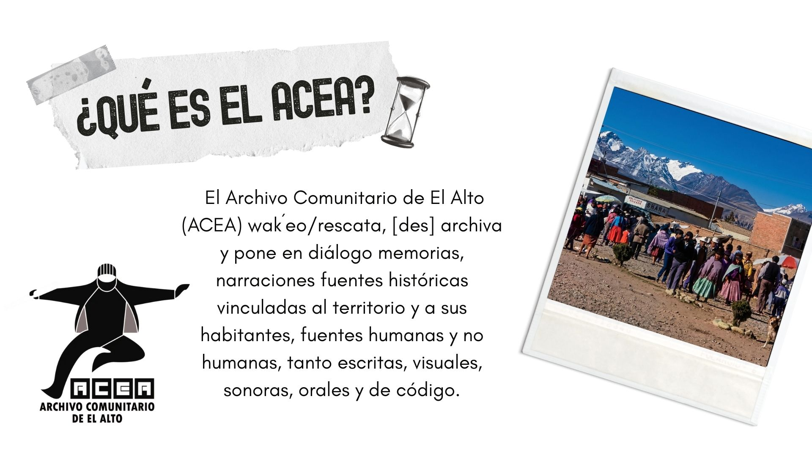
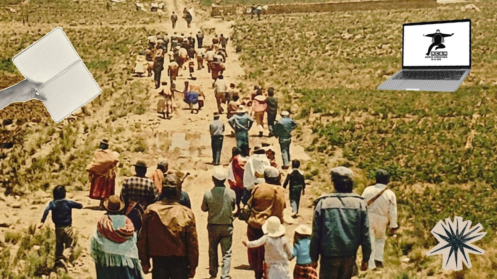
ACEA ukax mä colectivo autogestionado ukaw 12 uru lapaka phaxsit 2022 maran El Alto,Bolivia markan utt’asiwayi. Agosto phaxsit 2023 maratpach mä repositorio digital de acceso gratuito archivoelalto.org ukham irnaqaski, lxs alteñxs, yatxatirinakaru ukhamarak khitinakatix aka territorio ukat markachirinakar lup’iñ munapki ukanakar yanapt’añataki.
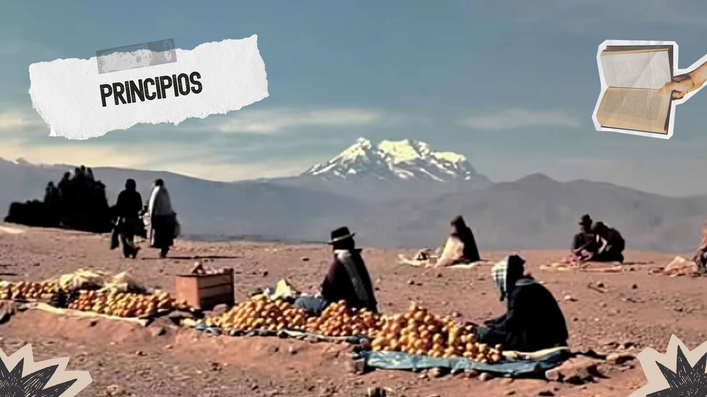
1. Descentrar la mirada de los archivos oficiales y ubicarnos en la otra vereda de la escritura de historias oficiales.
1. Archivos oficiales ukanakat uñch’ukiñ descentrando ukat yaqha acera ukan jikxatasiña, historias oficiales ukanaka qillqañataki.
2. Desordenar las memorias que se han instalado sobre nuestro espacio y sus habitantes por medio del [des]archivo.
2. Jiwasan espacio ukat ukan jakirinakax [de]archivo tuqiw amtawinak jan walt’ayaña.
3. Coautoría de las fuentes por medio de agregar y registrar la propiedad familiar, colectiva o individual de, por ejemplo, las fotografías. Así como de las investigaciones que surgen del ACEA. Evitando perder la pluralidad bajo el manto de un archivo institucionalizado.
3. Fuentes ukanaka mayachasiña ukhamaraki qillqantayaña familia, colectiva jan ukaxa sapa mayni propiedad ukanaka, sañäni, fotografías ukanaka. Ukhamaraki yatxatawinakax ACEA ukan uñstayatawa. Mä archivo institucionalizado ukan capa ukamp pluralidad ukar jan chhaqhayaña.
4. Restitución de las memorias con las comunidades/barrios/sindicatos alteños por medio del diálogo horizontal.
4. Ayllunaka/barrios/sindicatos alteños ukanakampi amtawinak kutt’ayaña, aruskipaña horizontal tuqi.
5. Gobernanza y conocimiento libre.
5. Gobernanza ukatxa libre yatiñanaka.
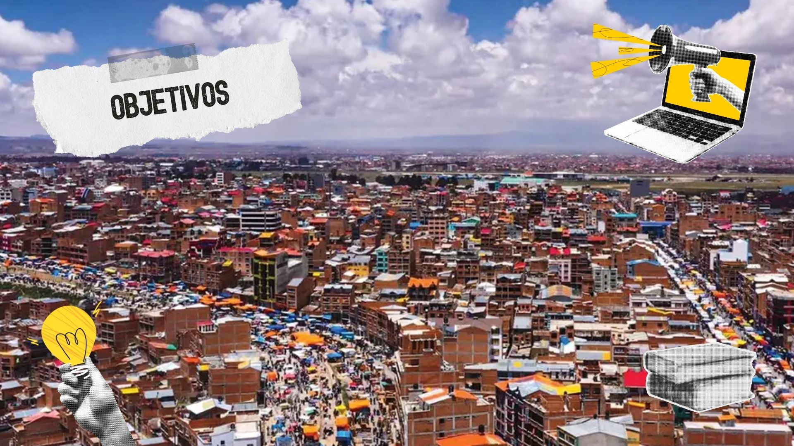
1. Recopilar [wak´eo/reskatiris] las memorias y narraciones escritas y audiovisuales.
2. Digitalizar las fuentes rescatadas/wak´eadas.
3. Catalogar las fuentes para su acceso y uso social.
4. Promover el [des]archivo/Investigación de las fuentes por parte de la propia sociedad alteña y del ACEA.
1. [wak ́eo/reskatiris] qillqata ukhamaraki audiovisual amtawinaka ukhamaraki sarnaqäwinaka apthapiña.
2. Qhispiyatanaka/kutt’ayata jamuqanaka digitalizaña.
3. Catálogo de fuentes ukanakax acceso social ukat apnaqawipataki.
4. Ch’amanchaña [un]archivo/Yatxatawi phunchhawinakata pachpa sociedad alteana ukhamaraki ACEA.

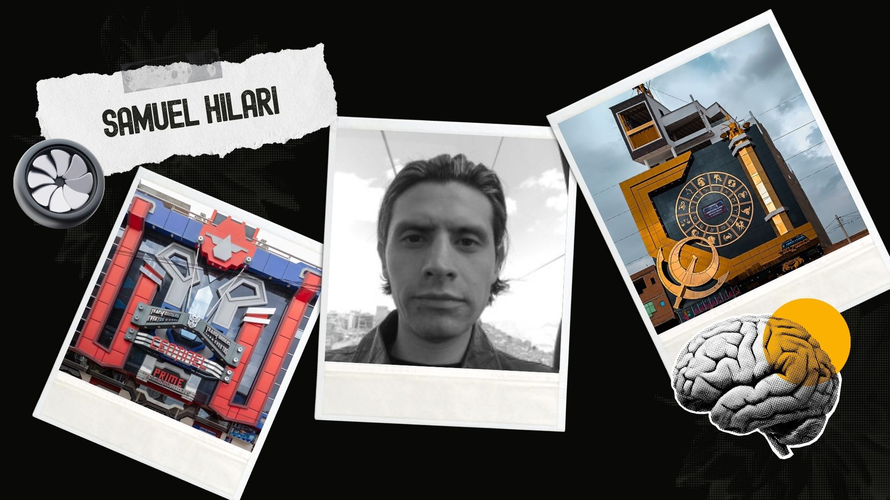
Samuel Hilari es arquitecto y co-fundador del Archivo Comunitario de El Alto. Su trabajo incluye el diseño arquitectónico, la investigación y el activismo artístico. Actualmente vive y trabaja en El Alto como arquitecto independiente, ademas publicó artículos y ensayos en varios paises.
Samuel Hilari jupax arquitecto ukhamarak Archivo Comunitario El Alto ukan cofundador ukhamawa. Jupan lurawipax diseño arquitectónico, yatxatäwi ukat activismo artístico ukanakawa. Jichhax El Alto markanx arquitecto independiente ukhamaw jakasi ukat irnaqaraki, ukatsti walja markanakan qillqatanaka ukat qilqt’äwinak uñt’ayawayi.
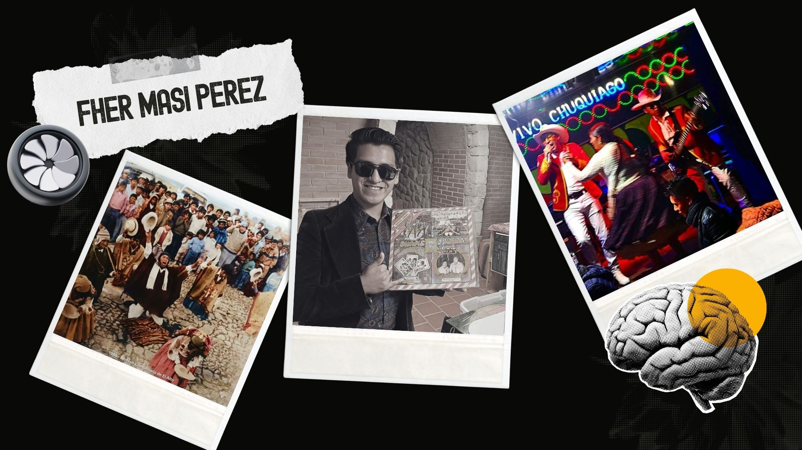
Fher Masi es historiador y escritor de la Ciudad de El Alto, co-fundador del Archivo Comunitario de El Alto y administrador del programa de recuperación de memorias visuales “Altupata 1900's: fotografías antiguas de El Alto” con más de mil fotografías en su haber. Actualmente trabaja en la sistematización de las fuentes visuales de ACEA y es becario en el Archivo La Paz, con un proyecto de sistematización de documentos coloniales referidos a Los Altos de La Paz.
Fher Masi jupax sarnaqäw yatxatiriwa ukat qillqiriwa, Ciudad de El Alto uksankiwa, Archivo Comunitario de El Alto uksan utt’asiriwa, ukatx “Altupata 1900 maranakan: El Alto markan nayra jamuqanak apsutanaka” uka wakichäwin administrador ukhamawa, waranq jila jamuqanak jupan amparapankiwa. Jichhax jupax sistematización de fuentes visuales ACEA ukan irnaqaski, ukatx Archivo de La Paz ukan masipawa, mä proyecto sistematización de documentos coloniales ukan Los Altos de La Paz ukar uñt’ayasa.
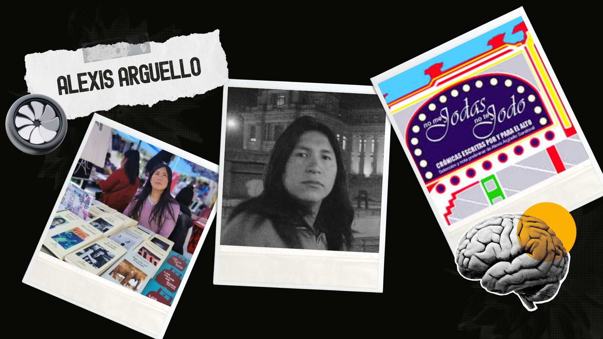
Alexis Argüello Sandoval es alteño, librero, gestor cultural y director de la editorial Sobras Selectas, fundada el año 2016, que a la fecha cuenta con diecisiete libros publicados (novela, cuento, crónica), la mayoría ambientados en la ciudad de El Alto. Director también, desde el año 2015, del Concurso No Municipal de Literatura. Miembro de El Alto Aesthetics, Cerco El Alto (Comunidad de Estudios de la Ciudad de El Alto) y del colectivo de colectivos culturales Altusa.
Alexis Argüello Sandoval jupax panka aljiri, panka aljiri, cultural gerente ukhamarak director de la editorial Sobras Selectas, 2016 maran utt’ayata, jichhakamax tunka paqallqun pankanakaw (novela, cortometraje, crónica) uñt’ayata, jilpachax El Alto markan uñt’ayatawa. Director ukhamaraki, 2015 maratpacha, Concurso de Literatura No Municipal ukana. El Alto Estética, Cerco El Alto (Comunidad de Estudios de la Ciudad de El Alto) ukat colectivo cultural Altusa ukankirinaka.
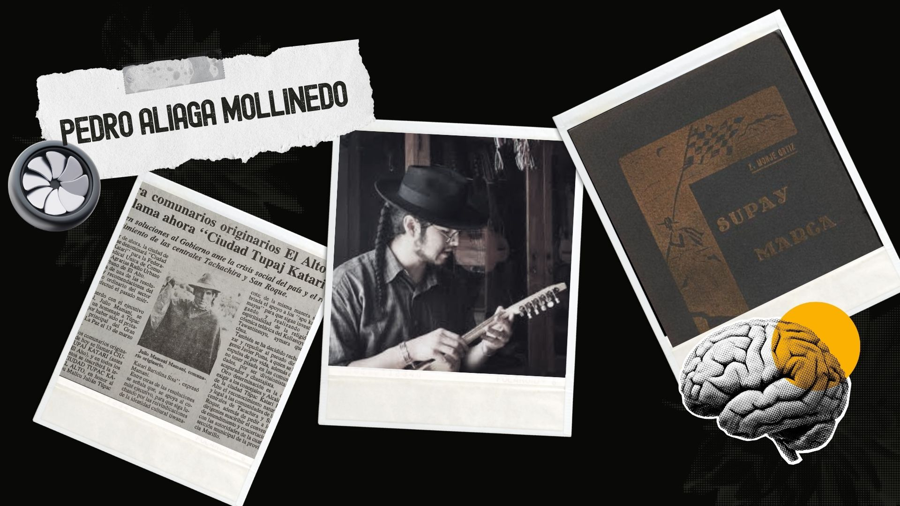
Imaynalla, wawqikuna. Soy Pedro, historiador y candidato a magíster en Historia. Exploro y escribo sobre temas relacionados con archivos históricos, rescate de fuentes documentales e historias visuales del siglo XIX y XX. Formo parte del Archivo Comunitario de El Alto, El Alto Aesthetics y la Orquesta Experimental de Instrumentos Nativos.
Suma arunaka, jilatanaka. Nayax Pedro, historiador ukhamarak candidato magister Historia tuqin irnaqiritwa. Nayax archivos históricos, fuentes documentales ukanakar qhispiyañ ukhamarak 19 ukat XX siglos visuales historias ukanakamp chikancht’asir temas ukanakat yatxatawaytwa ukat qillqt’araktwa. Nayax Archivo Comunitario El Alto, Estética El Alto ukat Orquesta Experimental de Instrumentos Nativos ukanakan chikancht’asiraktwa.
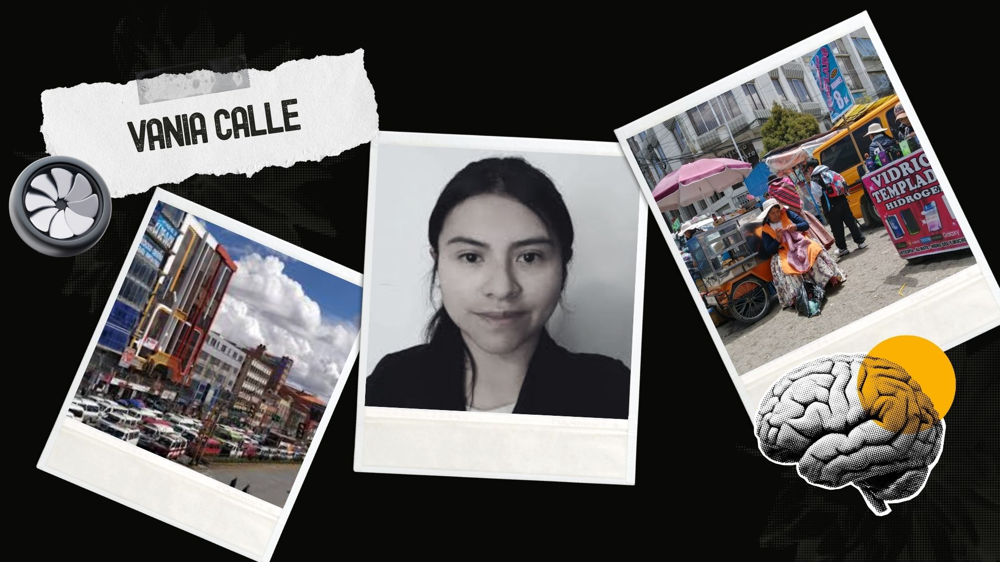
¡Hola! Soy Vania, arquitecta y magíster en Ordenamiento Territorial y Planificación Urbana, con vocación docente y proyectista de obras civiles. Mi trabajo se sitúa en el cruce entre la arquitectura, el urbanismo y la investigación transdisciplinar. Formar parte del ACEA ha sido una oportunidad para reconectar con la vida de quienes me antecedieron, desde la memoria y los saberes.
Kamisaki! Nayax Vania, arquitecto ukhamarak maestría de Planificación Territorial y Planificación Urbana, yatichañ vocación ukhamarak obras civiles redactor. Nayan lurawijasti arquitectura, planificación urbana ukat investigación transdisciplinaria ukanakan cruce ukan jikxatasi. ACEA ukan chikanchasiñax mä askiw khitinakatix nayat nayrankapki ukanakan jakäwinakapamp wasitat jikisiñataki, amuyunak ukhamarak yatiñanakat.
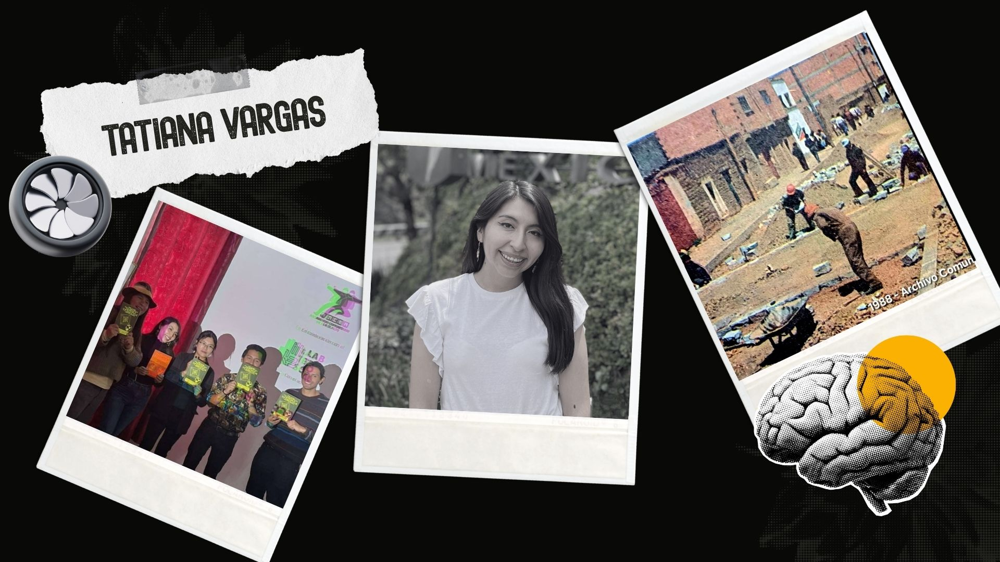
Soy Tatiana Vargas Condori, geógrafa alteña, hice la maestría en Ciencias Sociales en la FLACSO – México y ahora soy candidata a doctora en Estudios Urbanos por el Centro de Estudios Demográficos, Urbanos y Ambientales (CEDUA) del Colegio de México. Entiendo la ciudad como un cuerpo vivo, lleno de sensaciones, ritmos y cambios permanentes. Para mi, ser parte del ACEA es una forma de hacer resistencia local: escribir la ciudad desde la experiencia, cuidar su memoria y comprenderla de una forma honesta.
Nayax Tatiana Vargas Condori, geógrafa Alteña, maestría Ciencias Sociales ukan FLACSO – México ukan lurawayta, jichhax doctorado ukhamaw Estudios Urbanos ukan Centro de Estudios Demográficos, Urbanos y Ambientales (CEDUA) del Colegio de México ukan yatiqawayta. Nayax markax mä jakañ janchirjamaw amuyasta, sensaciones, ritmos ukat permanente cambios ukanakamp phuqt’ata. Nayatakix ACEA ukan chikanchasiñax mä thakhiw local resistencia lurañataki: experienciat markat qillqaña, amuyupat uñjaña ukat chiqapar amuyt’aña.
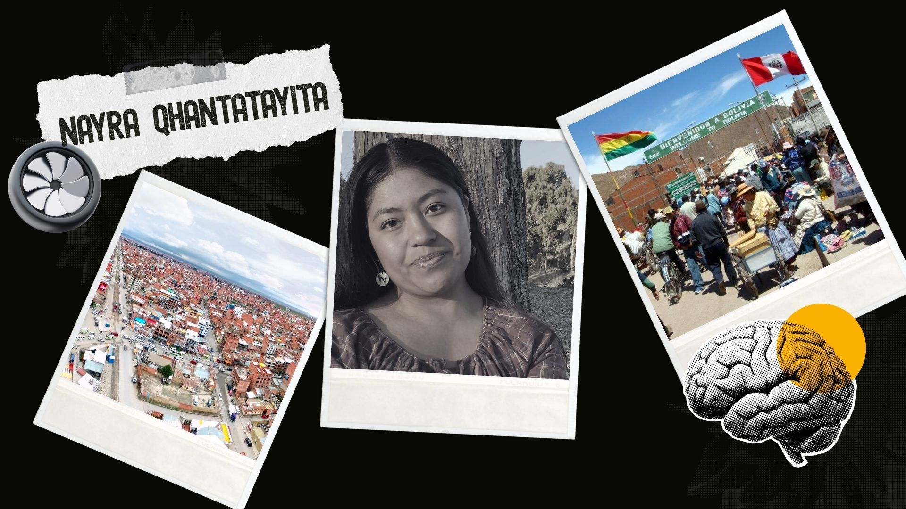
Soy Nayra Qhantatayita Bautista Bautista proveniente de la comunidad Tajocachi, provincia Umasuyu. Residente en El Alto. Estudiante egresada de la carrera de Linguistica e Idiomas en la Universidad Pública de El Alto (UPEA). Profesora del idioma Aymara y creadora de la página “Kullakita Nayra” en redes sociales para difundir el idioma y cultura Aymara a las nuevas generaciones. Traductora. Locutora e investigadora independiente que registra los rituales, danzas y otras prácticas ancestrales Aymaras.
Nayax Nayra Qhantatayita Bautista Bautista Tajocachi ayllunkirïtwa, provincia Umasuyu. El Alto markan jakasiri. Universidad Pública de El Alto (UPEA) ukan Lingüística y Lenguas ukan yatiqañ tukuyir yatiqiri. Jupax aymara aru yatichiriwa, ukhamarak medios sociales ukan “Kullakita Nayra” panka luriri, ukhamat machaq wawanakar aymara aru, saräwip yatiyañataki. Jaqukipiri. Independiente arst’iri ukhamaraki yatxatiri khititixa aymara ritualanaka, thuqt’awinaka ukhamaraki yaqha nayra achachilana lurawinakapa qillqt’i.
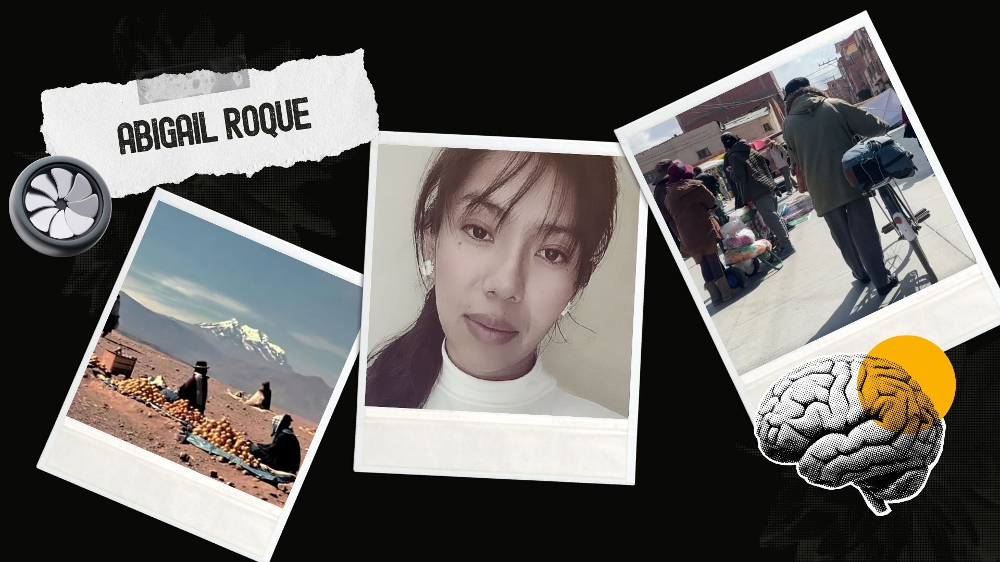
¡Hola! Soy Abigail Roque Miranda planificadora territorial e investigadora socioespacial y digital. Miembro del LabTecnoSocial. Dentro del ACEA apoyo producción de conocimiento situado, colectivo y abierto entendiendo el archivo y el territorio como herramientas fundamentales para la reflexión crítica y la acción urbana.
Kamisaki! Nayax Abigail Roque Miranda planificadora territorial ukhamarak socioespacial ukat digital ukan yatxatiritwa. Laboratorio Social ukan irnaqiri. ACEA ukanx nayax situado, colectivo ukat abierto de conocimientos ukanakan lurawiparuw yanapt’ta, archivo ukat territorio ukanakax herramientas fundamentales ukham amuyt’asa, reflexión crítica ukat acción urbana ukanakataki.

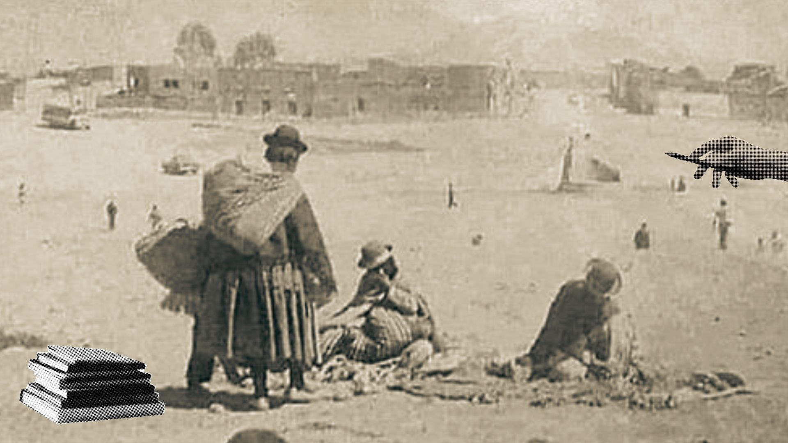
A diferencia de otras ciudades del país, El Alto no cuenta con un archivo histórico propio que sistematice, conserve y haga accesible su producción documental, visual y testimonial. Esta ausencia ha generado una fragmentación del conocimiento sobre la ciudad.
Yaqha markanakat sipansa, El Alto markax janiw archivo histórico ukax utjkiti, ukax sistematiza, jark’aqaraki ukat documental, visual ukat testimonial ukanak lurañ yati. Uka jan utjatapax markat yatiñanak t’aqa t’aqaruw puriyi.
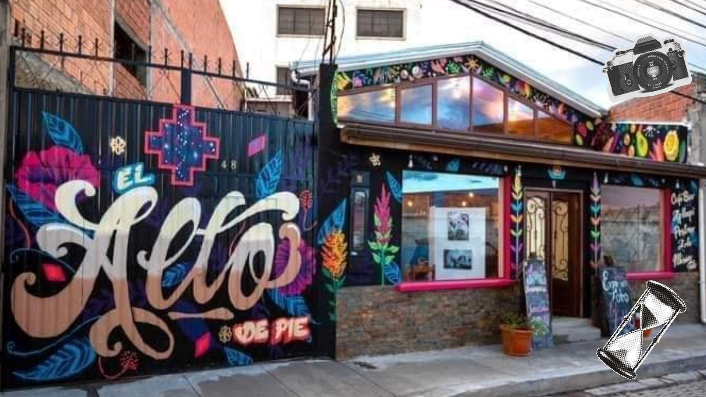
Samuel Hilari y Fher Masi coincidieron en la biblioteca del Café Amta. Donde Fher se dedicaba a catalogar libros, las conversaciones sobre El Alto se volvieron recurrentes. En medio de esos diálogos, se preguntaron ¿Por qué no existe un archivo en El Alto?
Samuel Hilari ukat Fher Masi jupanakax Café Amta ukan bibliotecapanw uñt’asipxäna. Kawkhantï Fher kullakajj libronak catálogo lurañatak chʼamachaskäna ukhajja, The High sat librot parltʼasiñajj sapa kutiw utjäna. Uka aruskipäwinak taypinx jiskt’asipxäna ¿Kunatsa El Alto markanx jan archivox utjkiti?
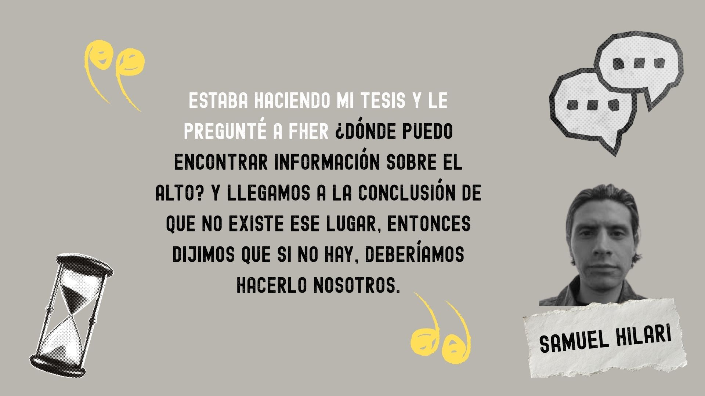
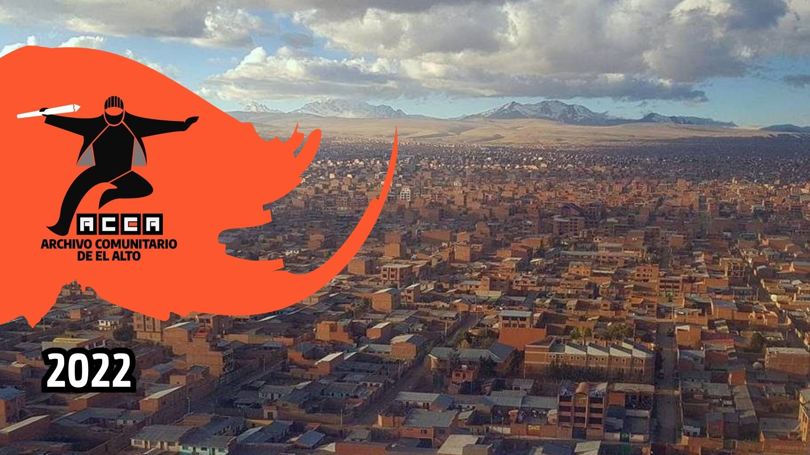
Hicimos una primera reunión en el Café Amta el año 2022 con varias personas interesadas en crear un archivo alteño, y así entre exposiciones y diálogos sobre El Alto, se fue juntando información en un Google Drive que fue escalando en un repositorio web, con la colaboración del LAB TECNOSOCIAL.
Nayrïr tantachäwiw Café Amta ukan 2022 maran utjawayi, walja jaqinakampiw mä archivo altar lurañ munapxi, ukat ukhamatw uñacht’äwinakamp El Alto tuqit aruskipäwinakamp taypinx yatiyawinak apthapita, ukax mä Google Drive ukanw apthapita, ukax mä repositorio web ukar escalatawa, LAB TECNOSOCIAL ukan yanapt’apampi.
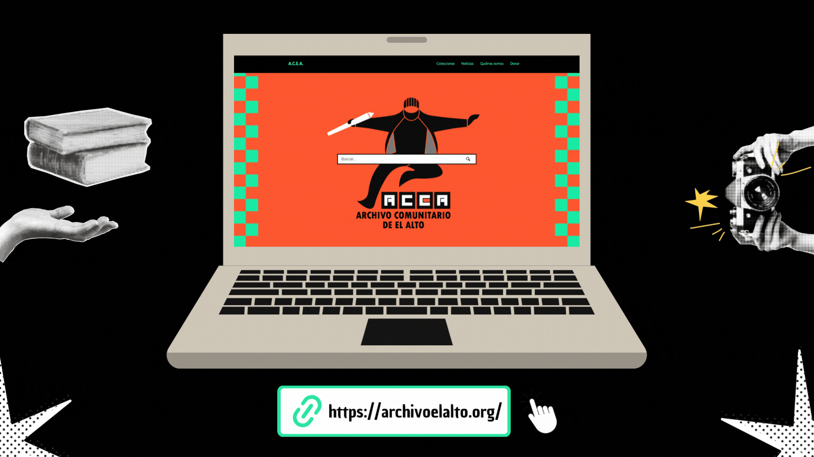
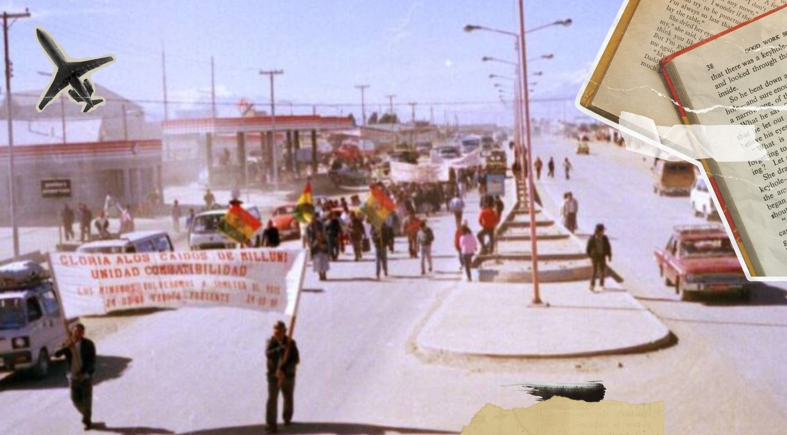
Se piensa que El Alto nunca tuvo un archivo, como La Paz. Sin embargo, sí existía un archivo de la municipalidad, pero se quemó. Se dice que la población no quería ese archivo porque había temas de deudas de catastro.
El Alto markax janipuniw mä archivo ukankänti, La Paz ukar uñtasitaw sasaw amuyasi. Ukampirus mä archivo municipal ukaw utjäna, ukampis phichhantatänwa. Ukham sapxiwa, markachirinakax janiw uka expediente munapkänti kunatix catastro manunakat jan walt’awinakax utjawayiwa.
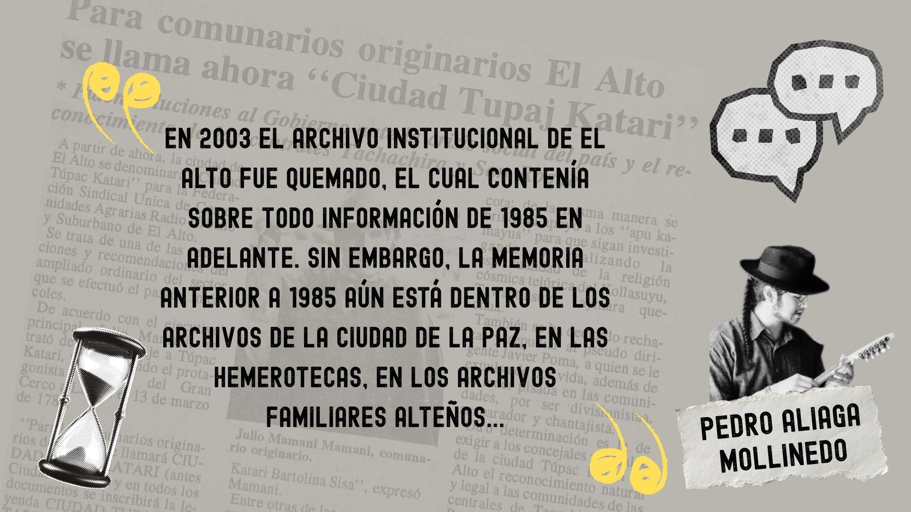
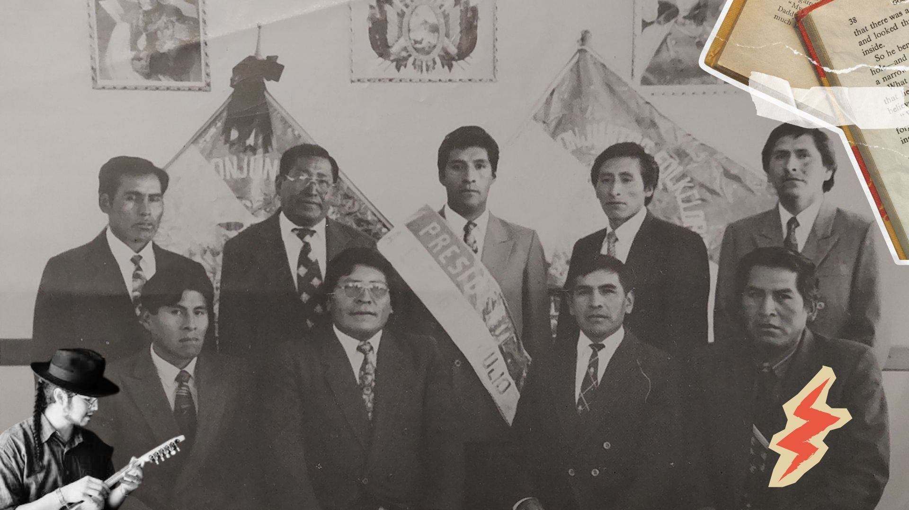
Cuando dejas un trámite en la Alcaldía, el archivo institucional ha desaparecido, pero una copia de ese archivo oficial y la memoria oral aún se mantienen en todas las casas de los alteños. (...) No nos hemos centrado solo en ver la memoria institucional, sino también en pensar en la memoria que puede tener el vecino del frente.
Kunapachatixa mä papel Ayuntamiento ukana jaytawayapxtaxa, expediente institucional ukaxa chhaqtawayxiwa, ukampisa mä copia uka expediente oficial ukatxa memoria oral ukaxa taqpacha ayllunkirinakana utanakapanwa imatäski. .
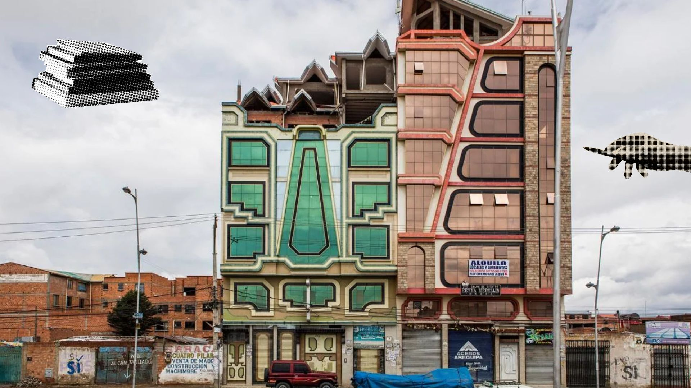
Investigadores extranjeros escriben sobre El Alto, publican en sus países, pero para el lugar investigado no queda nada. Por eso nos interesa recuperar estas publicaciones y ponerlas de acceso abierto.
Anqäx markankir yatxatirinakax El Alto markat qillqt’apxi, markanakapanw uñt’ayasipxi, ukampis sinti yatxatat chiqatakix janiw kunas utjxiti. Ukatwa uka qillqatanaka apsuñ munapxta, ukat jistʼarat jaqinakar uñtʼayañ munapxta.


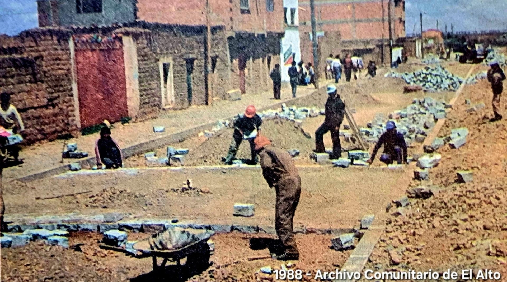
Queremos reconstruir la historia alteña. Por ello, realizamos el ejercicio de huaquear, de hacer rescatiri de memorias, de fotografias, de documentos PDF, etc.
Jiwasax Alte sarnaqäwip wasitat lurañ munapxta. Ukatwa, ejercicio de huaquear, amtawinak qhispiyaña, fotografías, documentos PDF, juk’ampinaka lurapxta.
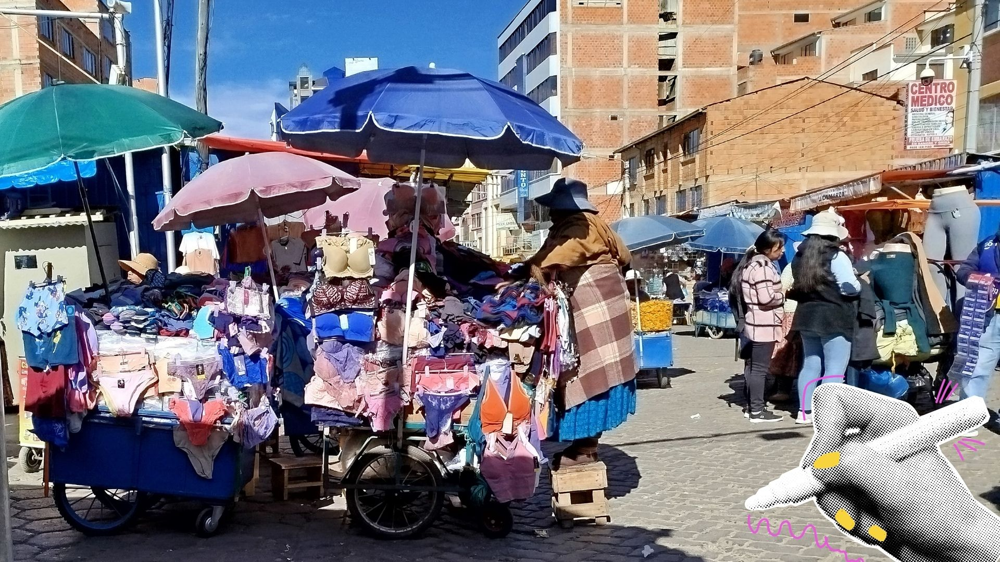
No es solo buscar información oficial. Si no reconstruir la historia, desde la lectura de la comunidad, de los habitantes, creo que ese es un punto central. Con la investigación del barrio 12 de octubre desde el ACEA se ha tratado de contar, reconstruir la historia de una parte de nuestra ciudad.
Janiw yatiyawinak oficial thaqhañakikiti. Janitï sarnaqäw wasitat lurañax utjkchixa, ayllun ullart’añatpacha, markachirinakat, nayax amuyta ukax mä chiqaw sañ muni. ACEA ukan 12 uru aka llumpaqa phaxsit barrio ukan yatxatäwipampix yatiyañ yant’ata, markasan mä chiqan sarnaqäwip wasitat lurañataki.
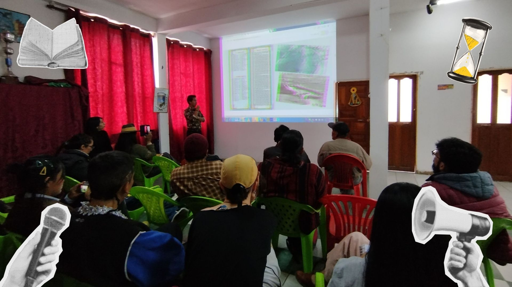
No sólo es archivar por archivar y guardar memoria sino también des-archivar para devolver la informacion a la comunidad.
Janiw archivo ukat amuyunak imañ laykukikiti jan ukasti desarchivo ukax yatiyawinak ayllunakar kutt’ayañatakiw lurasi.

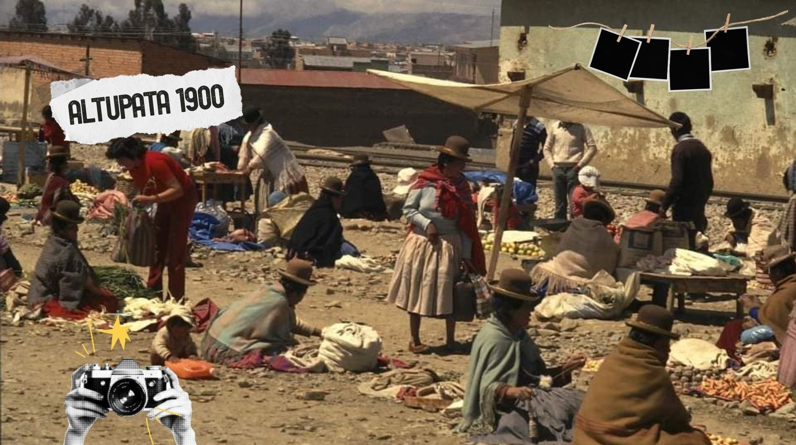
Altupata 1900 es un repositorio digital de fotografías antiguas de El Alto. Esta página de Facebook es un germen de lo que es el ACEA, permite a la gente contribuir con fotos.
Altupata 1900 ukax El Alto markan nayra jamuqanak uñt’ayañ digital ukan imañ utapawa. Aka Facebook ukanx mä gérmenes ukhamawa kunatix ACEA ukax taqi kuna, jaqinakarux jamuqanak uñt’ayañapatakiw jayti.
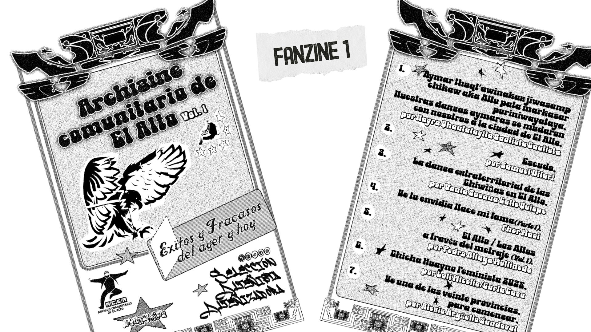
Como mecanismo de difusión y socialización, en 2024 iniciamos la publicación de fanzines, a los que denominamos Archizines. El Archizine Nº 1 reúne siete textos elaborados por integrantes del ACEA, que abordan temáticas diversas vinculadas a la cultura urbana de la ciudad de El Alto, desde el análisis de las danzas aymaras en el contexto urbano hasta la curaduría de una playlist de chicha–huayño feminista.
Mä mecanismo de difusión ukhamarak socialización ukhamawa, 2024 maranx fanzines ukanakaw uñt’ayañ qalltañäni, ukax Archizines sasaw sutichañäni. Archizine No 1 ukax paqallq qillqatanakaw ACEA ukankirinakan wakicht’ata, ukax kunayman tuqinakatw arst’i, ukax El Alto markan cultura urbana ukamp chikt’atawa, aymara thuqt’awinak contexto urbano ukan uñakipañat qalltasa, mä lista de reproducción feminista chicha–huayño ukan curadoría ukar puriñkama.
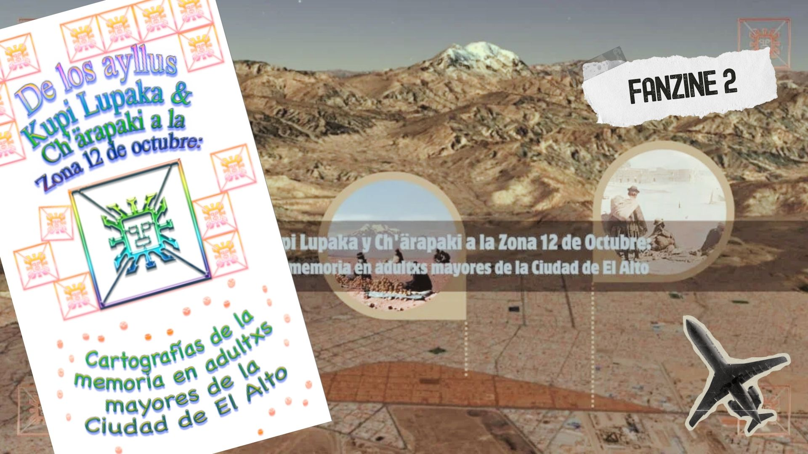
Destacamos las historias del barrio 12 de octubre, exponiendo la toponimia, la historia del proceso de construcción y evolución urbana desde la perspectiva de la población adulta mayor. Quienes relatan desde su experiencia y cotidianidad las principales transformaciones de sus espacios. Desde su llegada a la zona, su proceso de urbanización y su posterior consolidación como Casco Urbano Central de El Alto.
Jiwasax 12 uru aka llumpaqa phaxsit barrio ukan sarnaqäwinakap uñacht’ayapxtanwa, toponimia, lurañ thakhi saräwi ukat evolución urbana ukanakax jilïr jaqinakan uñjatapat uñacht’ayapxtanxa. Khitinakatix experienciapat ukhamarak sapa uru sarnaqawipat espacios ukan jach’a mayjt’awinakapat yatiyapxi. Uka chiqaru puritapatxa, proceso de urbanización ukatxa qhiparuxa Centro Urbano Central de El Alto ukhama ch’amanchatapata.
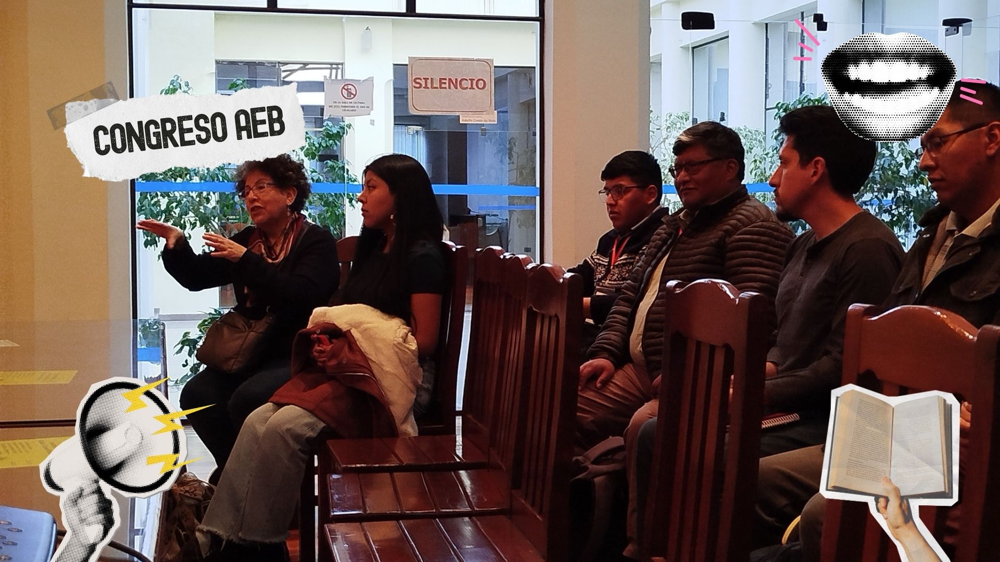
El ACEA ha participado desde el 2023 en el Congreso de la Asociación de Estudios Bolivianos. En 2023 la mesa que congrego a los integrantes del Archivo se tituló “El Alto o Los Altos: Fuentes para una historia colectiva”. En la gestión 2025 el ACEA estuvo presente en XII Congreso de la Asociación de Estudios Bolivianos, con la mesa 32, “La Bolivia del bicentenario desde El Alto: memoria y micropolítica. donde se presentaron 9 ponencias referidas a El Alto y su desarrollo historico, politico y territorial.
ACEA ukax 2023 maratpachaw Congreso de la Asociación de Estudios Bolivianos ukan chikancht’asiwayi. 2023 maranx Archivo ukankirinakar tantacht’kta uka tabla ukanx “Alto jan ukax Alto: Fuentes para una historia colectiva” sutimp uñt’atawa. 2025 marana apnaqawipanxa ACEA ukaxa XII Congreso de la Asociación de Estudios Bolivianos ukanxa uñacht’ayatarakiwa, ukaxa tabla 32, “La Bolivia del bicentenario de El Alto: memoria y micropolítica”. kawkhantix 9 qillqatanakax El Alto ukat sarnaqäwi, política ukat territorial ukanakan nayrar sartawipatw arsusipxi.
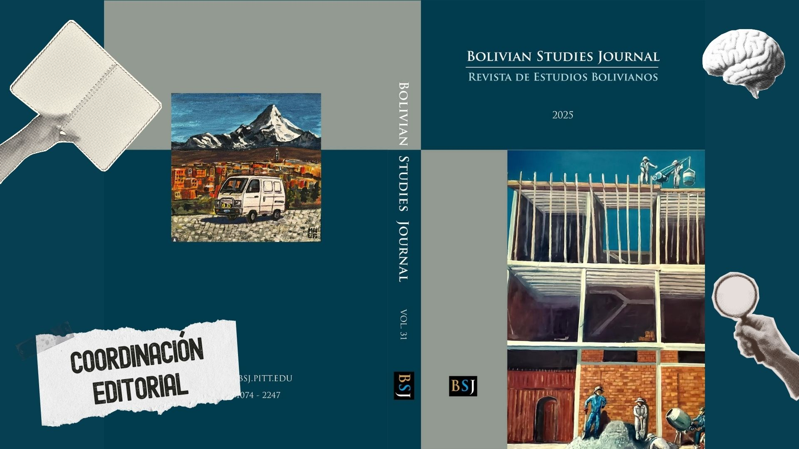
El ACEA en colaboración con la revista Bolivian Studies Journal de la Universidad de Pittsburgh, logró publicar el dossier “El Alto o Los Altos, perspectivas locales para el análisis crítico”. Dicha publicación reúne trabajos de investigación, artículos, ensayos y entrevistas. Las cuales marcan el proceso de construcción de El Alto desde distintos enfoques.
ACEA ukax Revista de Estudios Bolivianos de la Universidad de Pittsburgh ukamp chikt’ataw “El Alto o Los Altos, perspectivas locales para análisis crítico” uka expediente uñt’ayañ atipxatayna. Said publicación ukax yatxatäw qillqatanaka, qillqatanaka, ensayo ukat entrevistas ukanakaw mayacht’asi. Ukanakax El Alto markan lurañ amtap kunayman amtawinakat uñacht’ayi.

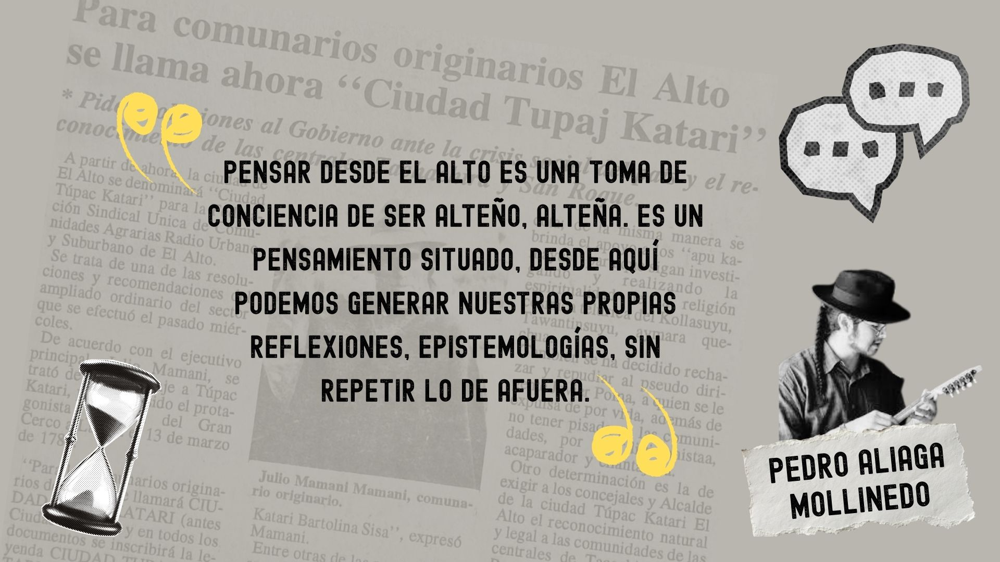
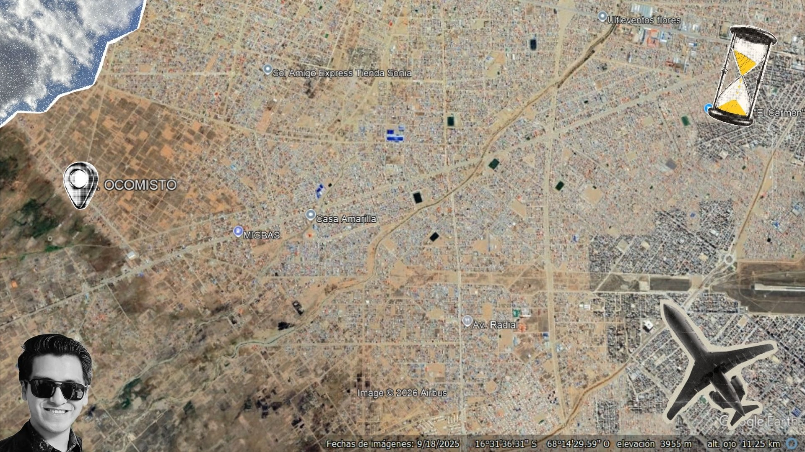
“Los Ayllus se urbanizaron y transformaron en Juntas Vecinales (...) Mi pueblo Ocomisto ahora es parte de El Alto, lo están fundando como Urbanización Ocomisto 2025, como si fuera reciente, pero lleva muchos años”. El ACEA quiere recuperar este tipo de memorias.
“Ayllunakax urbanizatäpxänwa ukatx Juntas de Barrios ukar tukuyatäpxänwa (...) Ocomisto ayllujax jichhax El Alto uksankiwa, jupanakax Urbanización Ocomisto 2025 ukham utt’ayasipki, jichhakiw ukham utt’ayasipxi, ukampis walja maranakaw munasispa”. ACEA ukax uka kasta amtawinak kutt’ayañ muni.
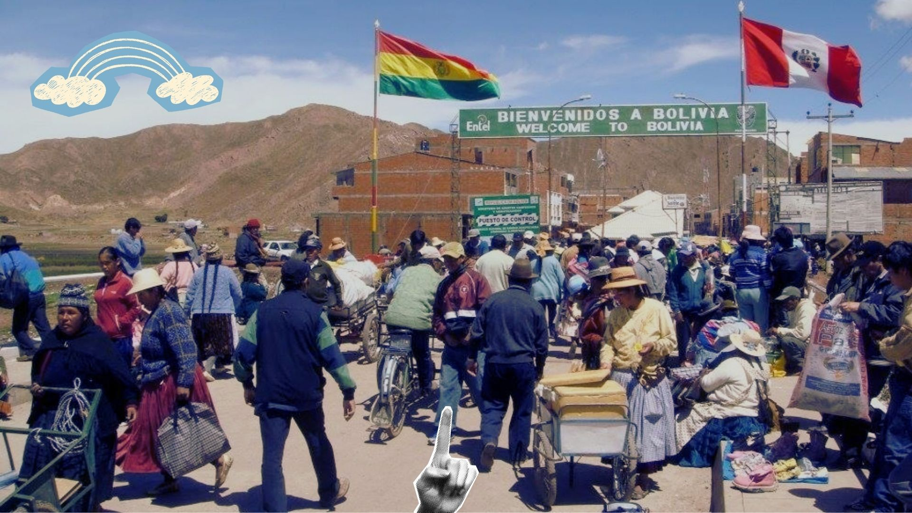
"El Alto es una especie de capital para el sur de los Andes, para mí. Desde donde de hecho hay mucha migración. Hay varias zonas en El Alto que se han constituido a través de migraciones desde el sur de Perú."
El Alto markax Andes uksanx mä kasta capital ukhamawa, nayan amuyt’atajax. Ukax walja migración ukan uñstawipawa. El Alto markanx walja chiqanakaw Perú uksan sur uksat sarxañ tuqiw utt’ayasiwayi."
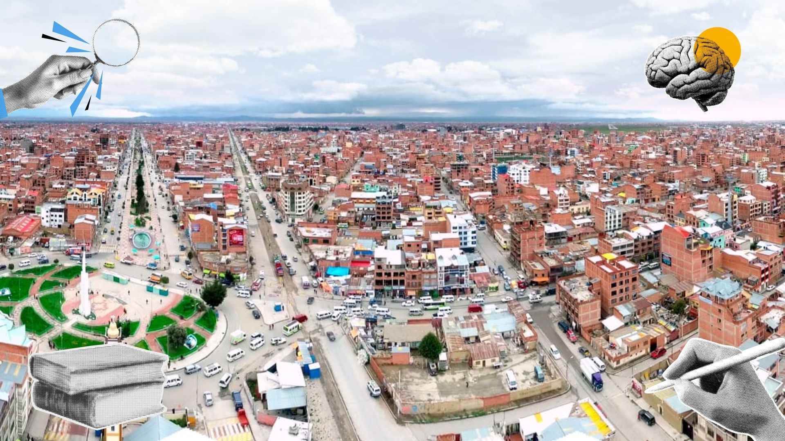
"De acuerdo al último censo, es una de las ciudades más grande y la más joven, y la que tal vez tiene menos información, recabada como archivo. Creemos que sí es importante pensar toda región andina desde El Alto."
"Qhipa censo ukarjamaxa, jach’a ukat wayn tawaqu markanakat maynïriwa, ukat inas juk’a yatiyawinakanix utjchispa, mä archivo ukham wasitat uñakipt’ata. Chiqpachans El Alto markat taqpach andino suyut amuyt’añax wali askiwa sasaw amuyapxtanxa."
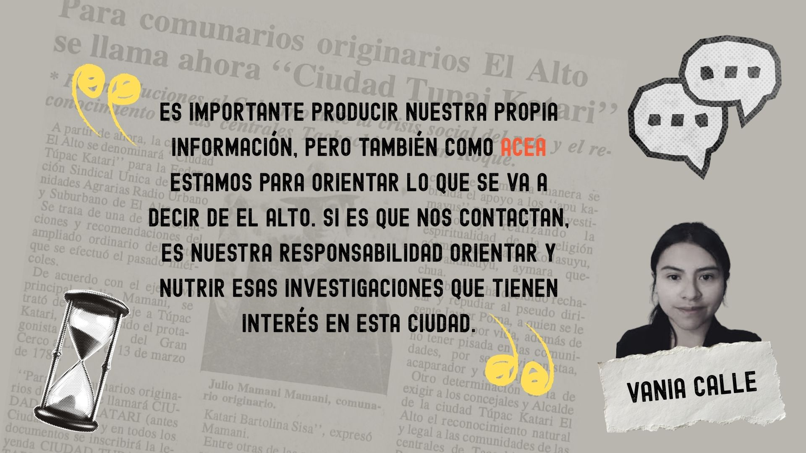
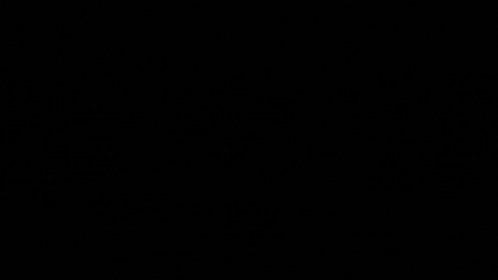
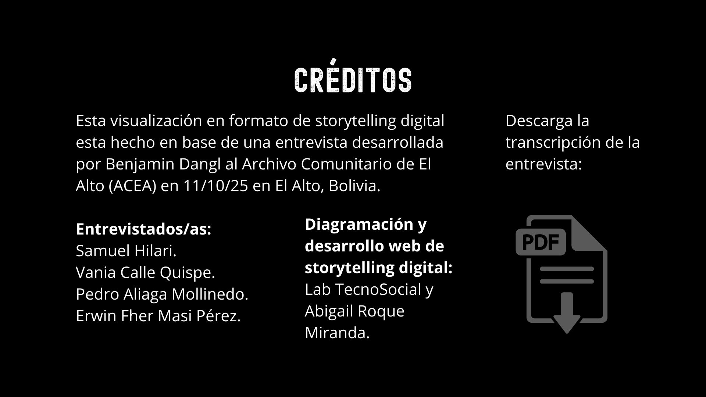